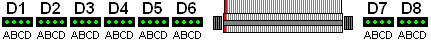
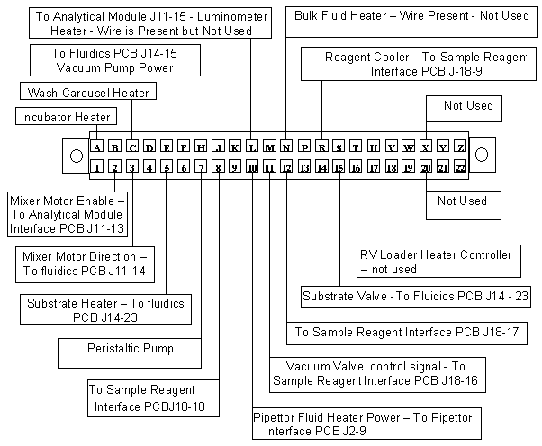
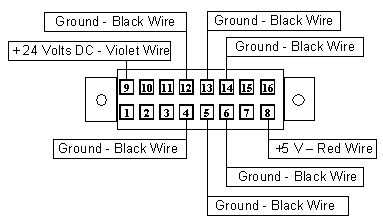

PCB - Power Driver
Purpose
- This document provides:
- Documentation necessary for checking the continuity of the wiring harnesses from card cage to drive motors.
- Pin outs of voltages and signals to/from the Power Driver PCB
- Details regarding temperature control
- Explanation of indicator LEDs mounted at the top of the Power Driver PCB
Power Driver Basic Operation
The Power Driver PCB and I/O PCB work in unison to control all heaters, the reagent carousel cooler, all solenoid valves, mixer motor speed and direction, and "enable" signals to control the peri pump and the vacuum pump. The I/O PCB receives feedback from each device and adjusts control signals accordingly. The control signals are sent from the I/O PCB through the ribbon cable that attaches to the top of the Power Driver PCB.
- Provides high current output drivers for the I/O PCB digital outputs and heater/ cooler controllers.
- Mixer motor direction and speed control circuitry.
- Supplies power to all heaters, Peltiers, all DC motors, and solenoid valves.
- MOSFET devices used for power sourcing.
Connections
The connections for supplying power to devices driven by the Power Driver PCB are through two sockets (P3 & B) at the bottom of the PCB. The ribbon cable connected to P! at the top of the PCB delivers control signals from the I/O PCB, through Backplane connector J18.
Adjustments
The R61 potentiometer is the only adjustment available on the Power Driver PCB, it is used to increase or decrease the speed of the mixer motor.
Test points
| Test Point | Description |
|---|---|
| TP2 | +5 VDC |
| TP3 | +24 VDC |
| TP4 | Signal Ground |
Indicator LEDs
Eight indictor LED blocks (D1 to D8) are mounted to the top of the Power Driver PCB. When the LED is lit, it indicates the device is on. Heater and cooler devices have +24 V applied by the system power harness and are controlled by grounding through the Power Driver PCB.

| If LED ... is lit | Then the |
|---|---|
| D1B | Mixer motor drive signal is enabled |
| D1C | Mixer motor direction signal (Off=CCW, On=CW) |
| D2A | Substrate heater signal is enabled |
| D2C | Peristaltic Pump signal is enabled |
| D3A | Main probe fluid heater signal is enabled |
| D3B | Wash tower vac. valve signal is enabled |
| D4B | Substrate valve signal is enabled |
| D4C | Loader heater signal is enabled (not used) |
| D4D | Reference LED Enable signal is enabled |
| D7A | Incubator heater signal is enabled |
| D7B | Wash Wheel heater is enabled |
| D7C | Vacuum pump (24V power is present)
Note: The Vacuum Pump enable signal comes from the I/O PCB and does not have a status indicator LED on the Power Driver PCB.
|
| D8C | Reagent Cooler signal is enabled |
Main wiring harness connections

Connector P3 Pinouts
- P3-7 Peristaltic Pump goes to Fluidics PCB J14-14
- P3-8 and P3-12 are not connected to anything at the Sample/Reagent PCB

Connector B Pinouts
